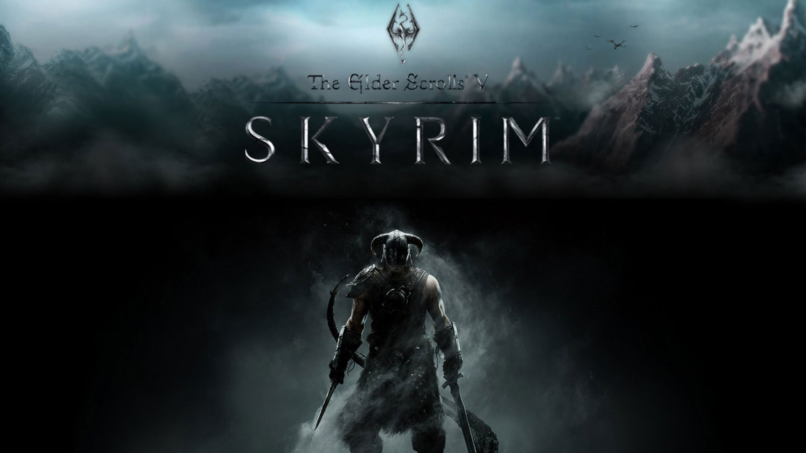
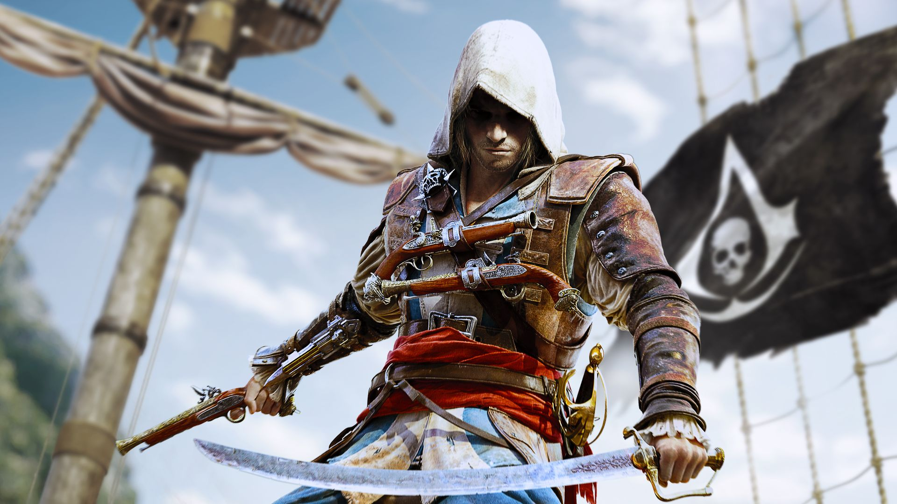
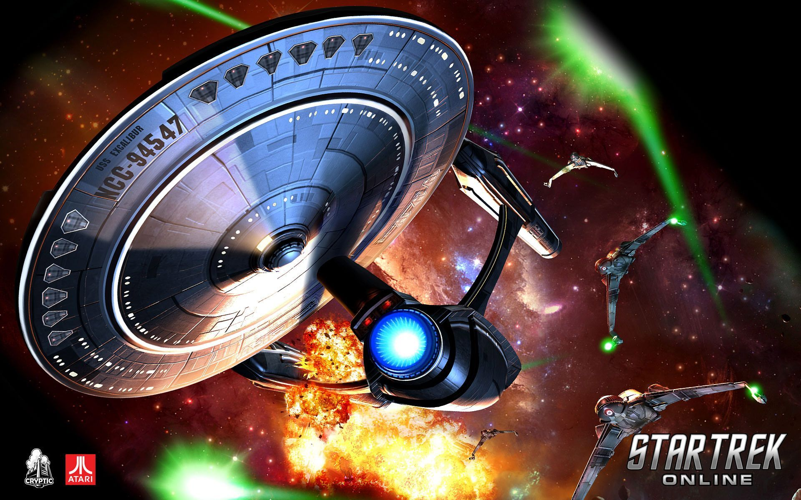
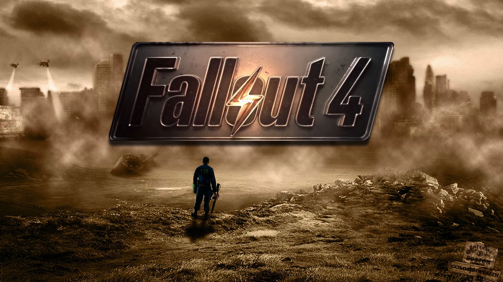
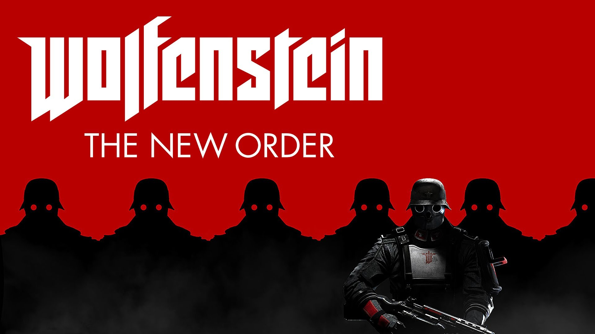

Moje Ulubione Gry Komputerowe

The Elder Scrolls V: Skyrim to kolejna część serii cRPG autorstwa zespołu Bethesda Softworks. Ponownie odwiedzamy w niej kontynent Tamriel, a fabuła tym razem obraca się wokół powrotu do tej krainy pradawnej rasy smoków.

Cykl Assassin's Creed należy do najpopularniejszych marek w portfolio koncernu Ubisoft. Trzymając się 12-miesięcznego rytmu wydawniczego, w rok po premierze Assassin's Creed III firma zdecydowała się wypuścić kolejną pełnoprawną odsłonę serii. Deweloping Assassin's Creed IV: Black Flag tradycyjnie powierzono studiu Ubisoft Montreal, któremu pomagały inne zespoły deweloperskie.

Wiedźmin 3: Dziki Gon (The Witcher 3: Wild Hunt) na komputery osobiste to trzecia odsłona popularnej serii gier RPG akcji opartej na prozie Andrzeja Sapkowskiego. Tytuł wyprodukowało studio CD Projekt RED, czyli zespół odpowiedzialny również za dwie poprzednie części – Wiedźmina z 2007 roku i Wiedźmina 2: Zabójcy Królów z 2011 roku.

Star Trek Online to wyprodukowana przez studio Cryptic gra MMO w popularnym uniwersum science-fiction. Akcja gry osadzona została w roku 2409. Gracze wcielają się w dowódcę statku kosmicznego, a ich głównym zajęciem jest eksplorowanie odległych zakątków galaktyki, wypełnianie rozmaitych misji, walka z wrogimi jednostkami i handel.

Czwarta pełnoprawna odsłona cyklu post-apokaliptycznych gier RPG. Akcja gry przenosi nas ponownie w typowe dla serii postapokaliptyczne realia, stawiając przede wszystkim na pełną swobodę rozgrywki. Oprócz dobrze znanych elementów cyklu, znacznemu rozbudowaniu uległ system rzemiosła oraz możliwości podręcznego organizera, znanego jako PipBoy. Mimo sporej ilości zmian w kwestii mechaniki, interfejsu oraz oprawy, twórcom udało się zachować oryginalny klimat z poprzednich części gry.
